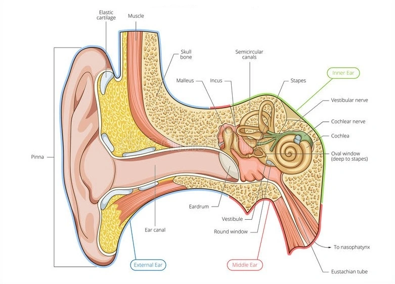
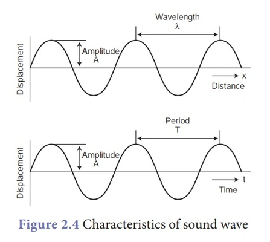
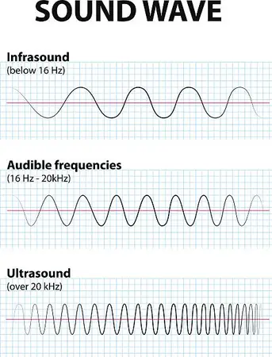
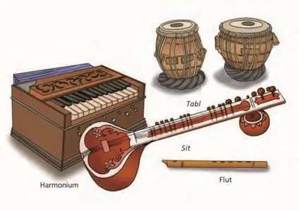

Sound

What is sound?
Sound, like heat and light, is a form of energy. It is a natural
phenomenon
that is produced by vibrational motion of objects. It travels in
the
form of waves. Let's understand in detail how sound is produced.

How sound is produced?

Sound is associated with vibrational or
oscillatory motion. The to-and-fro motion of an object is called vibration. Vibrations produce
various forms of energy, one of them is sound. Various objects vibrate in to produce sound. You
know
that there are a variety of musical instruments producing different type of sounds. Which part
of
the tabla, guitar or flute
vibrates? In a tabla, the two membranes vibrate and produce sound, whereas in case of a guitar,
the
strings vibrate. In a flute, the air column vibrates, producing sound. In humans sound is
produced
by an organ called larynx (commonly called voice box). When we speak, air rushes out of our
lungs to
larynx via windpipe. Larynx is located at top end of the windpipe. On the top of larynx there
are two membranes called vocal folds (commonly called vocal cords), which begins to vibrate when
of
air rushes in from below. There are muscles in the larynx that lengthen and shorten the vocal
cords
and alter the tension to produce different pitches. The space between the vocal fold is called
glottis. Different sound can be made by varying opening and closing of the glottis. Our mouth,
tongue teeth, lips and nasal cavity also helps us to produce basic sound.
How does sound travels?
Vibrations cause
waves in the air. We hear the sound when these waves reach our ears. To
understandhow this happens, let us take the example of a drum.
When a drum is struck, the membrane on the drum moves backwards and forwards, i.e vibrates. This
causes the air molecules surrounding the drum to vibrate. If we imagine the air molecules to be
like
small balls, a sound wave travelling through air alternatively pushes these balls close together
and
then pulls them away from each other. The areas where they lie together are called compressions,
and
the areas where they lie away from one another are called rarefactions. As the sound wave
propagates, the molecules themselves do not move from one point to another, they only vibrate
about
a mean position. It is the effect that propagates and reaches our ears.

Sound needs a medium to travel

Sound can travel in all three mediums (solid,
liquid and gases). It cannot travel in vacuum. This is because sound travels by producing a
vibration in the molecules of the medium surrounding it and there are no molecules in vacuum.
Two
astronauts in outer space can see each other in space but cannot hear each other. This is
because
sound requires a medium to travel as vibrations can be transferred from one particle to another
only
in a medium. Hence, sound waves cannot travel in vacuum. Thus, we can say that sound needs a
medium
to travel.
Speed of sound
The speed of sound is defined as the distance
through which a sound wave’s point, such as a compression or a rarefaction, travels per unit of
time. The speed of sound remains the same for all frequencies in a given medium under the same
physical conditions.

Factors affecting the speed of sound
Density and temperature of the medium in
which
the sound wave travels affect the speed of sound.
Density of the Medium
When the medium is dense, the molecules in
the
medium are closely packed, which means that the sound travels faster. Therefore, the speed
of
sound
increases as the density of the medium increases.
Temperature of the Medium
The speed of sound is directly proportional
to
the temperature. Therefore, as the temperature increases, the speed of sound increases.
Speed of sound in different mediums
The speed of the sound depends on the density
and
the elasticity of the medium through which it travels. In general, sound travels faster in
liquids
than in gases and quicker in solids than in liquids. The greater the elasticity and the
lower
the
density, the faster sound travels in a medium.
Speed of sound in solids
Sound is nothing more than a disturbance
propagated by the collisions between the particles, one molecule hitting the next and so
forth.
Solids are significantly denser than liquids or gases, and this means that the molecules are
closer
to each other in solids than in liquids and liquids than in gases. This closeness due to
density
means that they can collide very quickly. Effectively it takes less time for a molecule of a
solid
to bump into its neighbouring molecule. Due to this advantage, the velocity of sound in a
solid
is
faster than in a gas.
The speed of sound in solid is 6000 metres per second, while the speed of sound in steel is
equal to
5100 metres per second. Another interesting fact about the speed of sound is that sound
travels
35
times faster in diamonds than in the air.
Speed of sound in liquids
Similarly, the density of a liquid is greater
than the density of a gas. Therefore, the distances between molecules are more in liquids
than
in solids but are less than in gases. Hence the speed of sound in liquids lies in between
the
speed of sound in solids and gases.The speed of sound in water is 1480 metres per second. It
is also interesting that the speed may vary between 1450 to 1498 metres per second in
distilled water. In contrast, seawater’s speed is 1531 metres per second when the
temperature is between 20ºC to 25ºC.
Speed of sound in gases
We should remember that the speed of sound is
independent of the density of the medium when it enters a liquid or solid. Since gases
expand to
fill the given space, density is relatively uniform irrespective of gas type, which isn’t
the
case with solids and liquids. The velocity of sound in gases is proportional to the square
root
of the absolute temperature (measured in Kelvin). Still, it is independent of the frequency
of
the sound wave or the pressure and the density of the medium. But none of the gases we find
in
real life is ideal gases, and this causes the properties to change slightly. The velocity of
sound in air at 20ºC is 343.2 m/s which translates to 1,236 km/h.
Parts of Human Ear

Outer Ear
The outer ear comes in all types of shapes and sizes & helps to give each of
us our unique appearance. The medical term for the outer ear is auricle or pinna. The
outer ear is made up of cartilage and skin. Sound first enters the outer ear. The pinna
collects sound waves and direct them to the external auditory canal. In general, the
tympanic membrane is called the eardrum. The tympanic membrane is thin and semi-transparent.
The external ear is formed by the pinna and the external auditory canal that receives sounds
and transmits them to the middle ear via the eardrum. The eardrum is very circular and
flexible, and it begins to vibrate when the incoming sound waves strike it.
Middle Ear
The middle ear consists of three tiny bones and it is filled with air. The bones are known
as ossicles. The three bones of the middle ear are named malleus, incus, and stapes. Sound
vibration on the tympanic membrane is transmitted further by these three bones. These three
bones form a bridge between the eardrum and the inner ear through the oval window that
covers the cochlea. A narrow tube called the Eustachian tube is approximately 3.5 cm in
length, connects the ear to the outer part of the nose, and acts as an equalizing valve.
This valve ensures that the pressure on either side of the eardrum is balanced and that
sound can be heard correctly.
Inner Ear
The inner ear or, the labyrinth consists of two
main structures. The structures are the cochlea and the vestibular system. The main function
of the cochlea is to help in hearing. The vestibular system consists of 3 semi-circular
canals, saccule, and utricle. The inner ear includes the cochlea, a structure that has a
spiral shape similar to a snail shell and is located in the bony labyrinth that has several
membranous sections filled with fluids called endolymph. When these liquids move, they will
create fluctuations in the cochlea’s which are hair-like structures called stereocilia. And
at last, the Organ of Corti transforms the mechanical energy of the sound waves into nerve
energy by creating electric impulses and these impulses are then sent to the brain through
the auditory or vestibulocochlear nerve.
Characteristics of Sound Waves

Like any wave, a sound wave too has many characteristics. The six characteristics of sound are
amplitude, wavelength, period, frequency, loudness and speed or velocity. To understand sound
well, it is imperative for everyone to learn about these characteristics.
Amplitude
When a wave passes through a medium, there is a temporary displacement of the particles of
the medium from their actual positions. The maximum displacement of these particles of the
medium from their actual positions when a wave passes through them can be defined as the
amplitude of the wave. In other words, it is used to describe the size of the wave. It is
measured in ‘meter' in the S.I. unit.
Wavelength
Wavelength is the minimum distance in which the sound wave repeats itself. It is the length
of one complete wave. In a sound wave, the combined length of an adjacent rarefaction and
compression is known as the wavelength. It is also important to remember that the distance
between the centres of two successive rarefactions and two successive compressions is
equivalent to its wavelength. The S.I. unit of wavelength is also metre.
Time Period
The time that is required to produce one complete
wave or cycle is known as the period of the wave. One full vibration of the vibrating body
produces one complete wave. So, the time taken for completing one vibration can be referred
to as the period. The Period is denoted by the letter T and the unit of measurement is
second (S).
Frequency
The total number of the cycles or waves that are
produced in one second can be referred to as the frequency of the wave. Alternatively,
frequency can also be defined as the number of vibrations per second. For instance, if 20
vibrations are produced in one second then the frequency of the waves will be 10 Hertz and
10 cycles. The frequency of a wave is fixed and it does not change when it passes through
different medium. The unit of frequency is Hertz or Hz.
1Hz = 1/second
Frequency and Pitch
Frequency and pitch are directly proportional to
each other.
A sound wave with a high frequency will have a high pitch and the sound wave with a low
frequency will have a low pitch also.
The sensation of the frequency is actually the pitch of the sound wave.
Amplitude and Loudness
The loudness of the sound depends on the
amplitude of the sound wave. Larger the amplitude, louder the sound is. In fact, loudness is
proportional to the square of the amplitude of sound vibration. If the amplitude becomes
twice the loudness becomes four time! The loudness of the soundwaves is measured in units
called decibels (dB).
Types of Sound

Sound can be of different types – soft, loud, pleasant, unpleasant, musical, audible, inaudible
etc. Some sounds may fall into more than one category. For instance, the sound produced when an
aeroplane takes off is both loud and unpleasant. The sound produced by marble cutter, on the
other hand, may not be as loud, but some people may find it irritating and unpleasant.
| Audible Sounds | Inaudible Sounds |
|---|---|
| Audible Sound is the sound of frequency which is audible to the human ear. The frequency of audible sounds is usually between 20Hz to 20kHz. | Inaudible sounds are the sounds of frequency which are not audible to the human ear. The frequency of inaudible sounds is below 20Hz and greater than 20kHz. |
| The human ear is very sensitive to the extent that every minute pressure difference in the air can be heard if they are in the audible frequency range. | The ultrasound machine which is used for tracking and studying many medical problems works at frequencies greater than 20kHz. |
Musical Instruments
The instruments which make musical sounds are called musical instruments. For Example: Sitar,
Veena, violin, tanpura, piano, harmonium, shehnai, tabla, cymbals, Jal Tarang, mridangam etc.
There are mainly four types of musical instruments:-
- Wind musical instruments
- Membrane musical instruments
- Plate type musical instruments
- Stringed musical instruments

Wind Musical Instruments
Wind musical instruments produced musical sounds by the vibration of air columns inside
them. In a wind musical instrument, a column of air enclosed in a wooden tube on metal tube
vibrates and produces musical sound. We have to pump air into the wind instrument to make it
work and produce sound. For Example: Shehnai, flute, nadaswaram and trumpet.
Membrane musical instruments
Membrane is a thin sheet of skin. Membrane type
musical instruments produce sounds by the vibrations of thin stretched membrane. A thin
membrane fixed tightly over a hollow wooden drum vibrates and produces sound. We have to
strike the stretched membrane of the instrument with our hands or with sticks to make it
vibrate and produce sound. For Example: Mridangam, tabla, Dholak, drums, Dhapli. When we
strike the membrane of mridangam, the sound that we here is not only that of the membranes,
but of the whole body of the mridangam.
Plate type musical instruments
Plate type musical instruments produce musical
sounds by the vibration of thick plates. The plate type musical instruments are simply
beaten to produce musical sounds. The cymbals consist of two concave brass plates. When the
two metal plates of cymbals are struck together, they make a ringing musical sound. The bell
used in performing Pooja is also a musical instrument. The bell is a hollow metal vessel
which emits musical sound when struck with a Hammer fixed inside it. Matka is also a plate
type musical instrument which makes sound when struck.
Stringed musical instruments
Stringed musical instruments produce musical sounds by the vibrations of stretched strings
on stretched wires. A string is a piece of thin wire. In a stringed musical instrument, thin
metal strings are fixed tightly between two points. When the stretched string of a musical
instrument is plucked or bowed with the fingers of our hand, the string starts vibrating and
produce sound. These strings are fixed tightly on a large sounding box. The air presents in
the sounding box increases the loudness of sound produced by vibrating strings. For example:
Sitar, violin, tanpura, Santoor, guitar, piano, ektara etc.
Noise
Sounds that are loud and unnecessary are called noise. The presence of loud, unwanted and
disturbing sound in our environment is called noise pollution.
Sources of noise Pollution
- The motor vehicles running on the road produce noise pollution by blowing horn and sound of their engines.
- The bursting of crackers on various social and religious occasions produces noise pollution.
- The various machine in factories make loud sounds and cause noise pollution.
- The taking off, landing and flying of aeroplane produce noise pollution.
- The playing of loudspeakers and bands at marriages and other social functions.
- The construction of building produces a lot of noise pollution in the surrounding.
- Loud playing of radio, speaker system and television produce noise pollution.
- Kitchen appliances cause noise pollution.
- Use of desert cooler and air conditioners cause noise pollution.
Harms of Noise Pollution
- Loud noise can cause great harm to our ears. Constant loud noise reduces the hearing power of our ears. loud noise can even damage ears permanently and cause deafness.
- Loud noise can cause a person to lose concentration in his work or studies.
- Loud noise can cause an ailment called Hypertension.
- Loud noise can cause irritation and headache.
- Loud noise during night time disturbs our sleep. Continued lack of sleep is bad for health.
Measures to control Noise Pollution
- We should not play radio, stereo systems and televisions too loudly.
- The horns of motor vehicles should not be gone unnecessarily.
- The bursting of crackers should be avoided.
- The noise making factory and airports should be shifted away from the residential area of the city.
- Loud speakers should be played at low volume during marriages and other social function.
- Trees should be planted along the roads and around building to reduce the noise pollution from the roads.
Wohoo! 🎉 The lesson is over.
You can now explore these helpful links.
You can now explore these helpful links.
A curated collection of videos for making your topics clear.
Interesting quiz for testing your knowledge.
Worksheets for textual based questions.